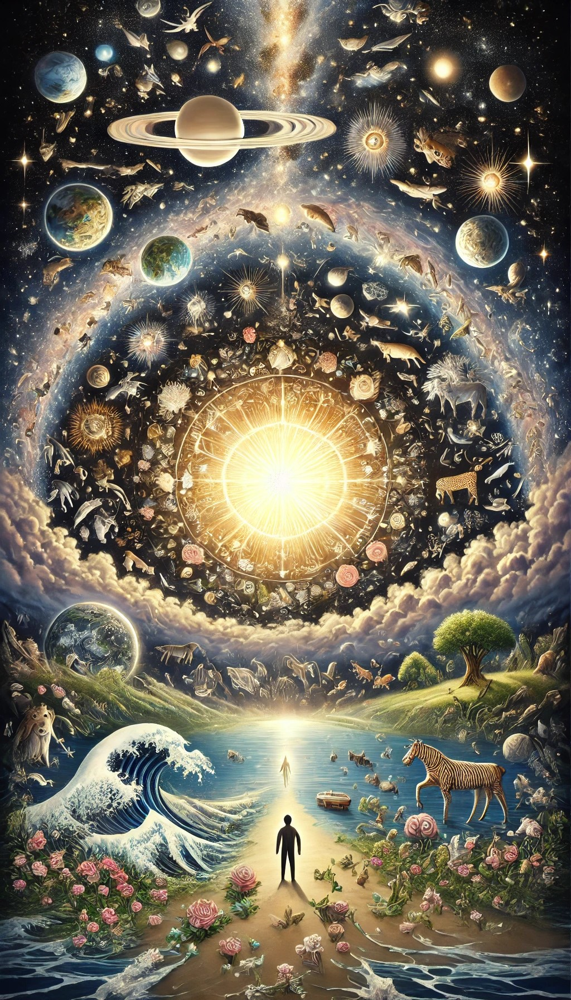

1:1 En el principio creó Dios los cielos y la tierra.1
1:2 Y la tierra estaba desordenada y vacía, y las tinieblas estaban sobre la faz del abismo, y el Espíritu de Dios se movía sobre la faz de las aguas.
1:3 Y dijo Dios: Sea la luz; y fue la luz.
1:4 Y vio Dios que la luz era buena; y separó Dios la luz de las tinieblas.
1:5 Y llamó Dios a la luz Día, y a las tinieblas llamó Noche. Y fue la tarde y la mañana un día.
1:6 Luego dijo Dios: Haya expansión2 en medio de las aguas, y separe las aguas de las aguas.
1:7 E hizo Dios la expansión, y separó las aguas que estaban debajo de la expansión, de las aguas que estaban sobre la expansión. Y fue así.
1:8 Y llamó Dios a la expansión Cielos3. Y fue la tarde y la mañana el día segundo.
1:9 Dijo también Dios: Júntense las aguas que están debajo de los cielos en un lugar, y descúbrase lo seco. Y fue así.
1:10 Y llamó Dios a lo seco Tierra, y a la reunión de las aguas llamó Mares. Y vio Dios que era bueno.
1:11 Después dijo Dios: Produzca la tierra hierba4 verde, hierba que dé semilla; árbol de fruto que dé fruto según su género, que su semilla esté en él, sobre la tierra. Y fue así.
1:12 Produjo, pues, la tierra hierba verde, hierba que da semilla según su naturaleza, y árbol que da fruto, cuya semilla está en él, según su género. Y vio Dios que era bueno.
1:13 Y fue la tarde y la mañana el día tercero.

1:14 Dijo luego Dios: Haya lumbreras5 en la expansión de los cielos para separar el día de la noche; y sirvan de señales para las estaciones, para días y años,
1:15 y sean por lumbreras en la expansión de los cielos para alumbrar sobre la tierra. Y fue así.
1:16 E hizo Dios las dos grandes lumbreras; la lumbrera mayor para que señorease en el día, y la lumbrera menor para que señorease en la noche; hizo también las estrellas.
1:17 Y las puso Dios en la expansión de los cielos para alumbrar sobre la tierra,
1:18 y para señorear en el día y en la noche, y para separar la luz de las tinieblas. Y vio Dios que era bueno.
1:19 Y fue la tarde y la mañana el día cuarto.
1:20 Dijo Dios: Produzcan las aguas seres vivientes, y aves que vuelen sobre la tierra, en la abierta expansión de los cielos.
1:21 Y creó Dios los grandes monstruos marinos, y todo ser viviente que se mueve, que las aguas produjeron según su género, y toda ave alada según su especie. Y vio Dios que era bueno.
1:22 Y Dios los bendijo, diciendo: Fructificad y multiplicaos, y llenad las aguas en los mares, y multiplíquense las aves en la tierra.
1:23 Y fue la tarde y la mañana el día quinto.
1:24 Luego dijo Dios: Produzca la tierra seres vivientes según su género, bestias y serpientes y animales de la tierra según su especie. Y fue así.
1:25 E hizo Dios animales de la tierra según su género, y ganado según su género, y todo animal que se arrastra sobre la tierra según su especie. Y vio Dios que era bueno.
1:26 Entonces dijo Dios: Hagamos6 al hombre a nuestra imagen, conforme a nuestra semejanza; y señoree en los peces del mar, en las aves de los cielos, en las bestias, en toda la tierra, y en todo animal que se arrastra sobre la tierra.
1:27 Y creó Dios al hombre a su imagen, a imagen de Dios lo creó; varón y hembra los creó.
1:28 Y los bendijo Dios, y les dijo: Fructificad y multiplicaos; llenad la tierra, y sojuzgadla, y señoread en los peces del mar, en las aves de los cielos, y en todas las bestias que se mueven sobre la tierra.
1:29 Y dijo Dios: He aquí que os he dado toda planta que da semilla, que está sobre toda la tierra, y todo árbol en que hay fruto y que da semilla; os serán para comer.7
1:30 Y a toda bestia de la tierra, y a todas las aves de los cielos, y a todo lo que se arrastra sobre la tierra, en que hay vida, toda planta verde les será para comer. Y fue así.
1:31 Y vio Dios todo lo que había hecho, y he aquí que era bueno en gran manera. Y fue la tarde y la mañana el día sexto.
2:1 Fueron, pues, acabados los cielos y la tierra, y todo el ejército de ellos.
2:2 Y acabó Dios en el día séptimo la obra que hizo; y reposó8 el día séptimo de toda la obra que hizo.
2:3 Y bendijo Dios al día séptimo, y lo santificó, porque en él reposó de toda la obra que había hecho en la creación.